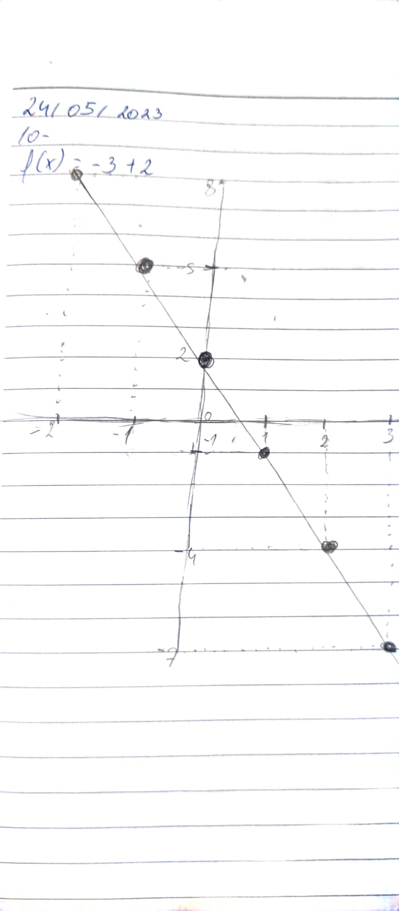
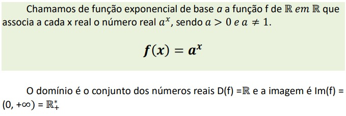

Função Afim
Continuação do conteudo de funções do primerio trimestre, neste conteudo vimos como gráficos conseguem
representar as funções afim, sendo linhas retas, o angulo, a direção e onde a reta começa são definidas pela
função:
Angulo: na função f(x)=ax+b o angulo é definido pelo "a" quanto maior o "a" maior será o angulo no caso mais
horizontal será a reta, o "a" pode ser positivo ou negativo ou seja:
- a > 0: reta crescente ou seja vai aumentar
- a < 0: reta decrescente ou seja vai diminuir
- a=0 é uma reta horizontal
Já o "b" define onde a reta corta o eixo y como exemplo vou utilizar a função f(x)=5x+10 no geo gebra
Como podemos ver a cada unidade em x aumenta 5 em y, e que o corte no eixo y é no y=10 como podemos ver na função
Outro exemplo f(x)=-3x+2

Nessa o corte no y acontece em y=2 e a cada aumento em x cai 3 em y pois o 3 é negativo sendo assim uma função
decrescente
Funções Quadraticas
Funções quadraticas são funções que apresentam um termo ax², ou seja um elemento eleavado as quadrado, uma das
principias formulas é a bhaskara em que temos ax²+bx+c=0
Na bhaskara cada coeficente faz modificações especificas no gráfico, o coeficiente a está relacionado com o
angulo da parabola quanto mais distante do 0 mais fina é a parabola, ja o coeficiente "b" está relacionado com o
corte no eixo x(isso que eu percebi), ja o coeficente "c" está relacionado ao corte no y
outra coisa importante é os valores de cade coeficiente
- a>0 parabola em U
- a< 0 parabola em ∩
- a = 0 vai se tornar uma função afim
- b>0 a esquerda do eixo y
- b < 0 a direita do eixo y
- b=0 será em cima do eixo y e terá apenas uma raiz
Já o coeficiente c define o corte no eixo y
Outra coisa a resltar é que os cortes nos eixo x são as raizes da função, podendo ter duas, uma ou nenhuma
Funções Exponenciais
Essas funções são definidas por f(x) = a x, esse tipo de função é uma curva para cima ou para
baixo quanto maior for o valor de "a" mais vertical será a reta como represntado abaixo:
Caso você some um numero a está função como por exemplos f(x)= 2x+2 a reta irá começar em y=2 e
irá aumentar de 2 em 2
Esse tipo de função está muito presente no dia a dia, como por exemplo a taxa de contaminaçõa na pandemia
covid-19, ou a desvalorização de um carro, etc.
Para essa função for verdadeira a>0 e diferente de 1 pois se for igual a 1 será um reta totalmete horizontal

o "a" define se a funçãos será cresecnte ou decrescente:
- a > 0 crescente
- 0< a < 1 decrscente
- a=0 não existe
 Voltar para o inicio
Voltar para o inicio